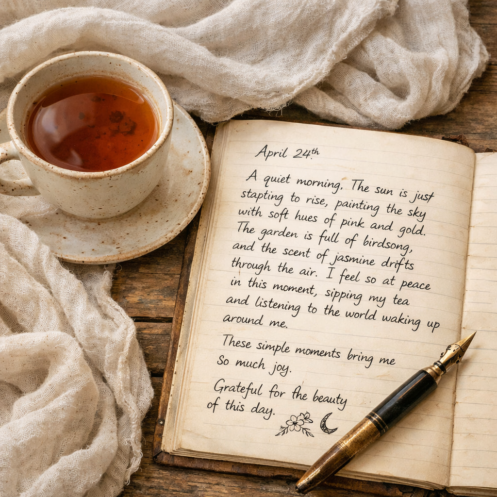

When the Fog Begins to Lift
For uncertain seasons where clarity feels distant, this reflection invites trust in God's steady guidance one step at a time.
Read ReflectionJournal
Reflections, devotional writing, and gentle guidance for faith, healing, creativity, and meaningful life transitions.
The journal is the reflection pillar of Backyard Studio, offering thoughtful writing for people navigating change, seeking grounding, or making room for healing, faith, and personal renewal.
Featured Reflection
For uncertain seasons where clarity feels distant, this reflection invites trust in God's steady guidance one step at a time.
Read ReflectionRecent Entries
A reflection on rest, rhythm, and releasing pressure while healing is slowly restored with care.
Read ReflectionExploring the sacred meeting place between making and listening, where ordinary creative moments become quiet conversations with God.
Read Reflection
A simple morning rhythm of reflection prompts and quiet noticing that helps life feel rooted, present, and less hurried.
Read ReflectionA devotional reminder that meaningful growth is often shaped through small daily acts of obedience, attention, and gratitude.
Read ReflectionExplore keepsakes, reflection tools, and story-led creative support designed to hold meaningful stories with clarity and care.